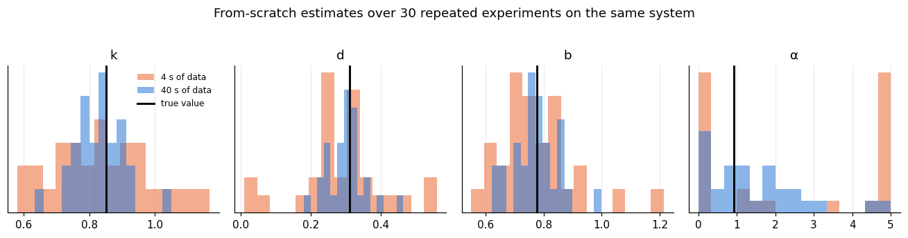

import numpy as np
import matplotlib.pyplot as plt
from scipy.optimize import least_squares
import dynutils
from dynutils import sample_system, simulate, multisine, actuator, DT, X0
dynutils.set_style()
rng = np.random.default_rng(dynutils.SEED)
COLOR, NAMES = dynutils.COLOR, dynutils.NAMESLOW = np.array([0.05, 0.01, 0.05, 0.0])
HIGH = np.array([5.0, 2.0, 3.0, 5.0])
GENERIC_GUESS = np.array([1.0, 0.5, 1.0, 0.5])
def predict(eta, u):
# Learner's model: simulate positions. Vectorised: eta (..., 4) and u (..., T) broadcast.
eta, u = np.asarray(eta, float), np.asarray(u, float)
shape = np.broadcast_shapes(eta.shape[:-1], u.shape[:-1])
k, d, b, a = (np.broadcast_to(eta[..., i], shape) for i in range(4))
force = actuator(np.concatenate([np.zeros(u.shape[:-1] + (1,)), u[..., :-1]], axis=-1))
q, v = np.full(shape, X0[0]), np.full(shape, X0[1])
out = np.empty(shape + (u.shape[-1] + 1,)); out[..., 0] = q
for t in range(u.shape[-1]):
v = v + DT * (-k * q - d * v + b * force[..., t] - a * q**3)
q = q + DT * v
out[..., t + 1] = q
return out
def fit_from_scratch(y, u, return_cov=False):
residual = lambda eta: predict(eta, u) - y
sol = least_squares(residual, GENERIC_GUESS, bounds=(LOW, HIGH), x_scale="jac")
if not return_cov:
return sol.x
# Gauss-Newton covariance of the estimate: sigma^2 (J^T J)^-1
return sol.x, np.mean(sol.fun**2) * np.linalg.pinv(sol.jac.T @ sol.jac)
def rmse(a, b):
return float(np.sqrt(np.mean((np.asarray(a) - np.asarray(b)) ** 2)))2. Short experiments versus long ones
test = sample_system(rng)
estimates = {}
for T in (40, 400): # 4 s versus 40 s of data
estimates[T] = np.array([fit_from_scratch(simulate(test, u, rng)[1], u)
for u in (multisine(T, rng) for _ in range(30))])
fig, axes = plt.subplots(1, 4, figsize=(12, 3))
for j, ax in enumerate(axes):
for T, col in ((40, COLOR["scratch"]), (400, COLOR["context"])):
ax.hist(estimates[T][:, j], bins=15, alpha=0.55, color=col, label=f"{T*DT:.0f} s of data")
ax.axvline(test["eta"][j], color=COLOR["truth"], lw=2, label="true value")
ax.set(title=NAMES[j], yticks=[])
axes[0].legend(fontsize=8)
fig.suptitle("From-scratch estimates over 30 repeated experiments on the same system", y=1.03)
plt.tight_layout(); plt.show()
for T in (40, 400):
rel = np.median(np.abs(estimates[T] - test["eta"]) / test["eta"], axis=0)
print(f"{T*DT:>4.0f} s median relative error:", " ".join(f"{n}={100*r:5.1f}%" for n, r in zip(NAMES, rel)))
4 s median relative error: k= 11.1% d= 22.1% b= 8.6% α=103.4% 40 s median relative error: k= 6.2% d= 8.7% b= 6.1% α=100.0%
Two lessons carry through the rest of the course:
- Short experiments leave the coefficients poorly determined. Four seconds is shorter than one oscillation period, so many coefficient combinations explain the data equally well. The estimates scatter widely.
- Some coefficients are hard to identify even with plenty of data. The hardening term \alpha only matters at large deflections, and it competes with the unmodelled quintic term and the disturbance. With 40 s, k, d and b are within a few percent, but \alpha is still uncertain by tens of percent. Identifiability depends on the experiment as much as on its length.
A new system gives us little data. The obvious question, and the subject of the rest of this course: can other systems help?
Exercises
Exercise 1: How much does the guess matter?
Refit the 4-second experiments from three different starting guesses: the generic one used above, one close to the true system, and one at the opposite corner of the bounds. Does the scatter of the resulting estimates change?
Solution
def fit_from(y, u, guess):
residual = lambda eta: predict(eta, u) - y
return least_squares(residual, guess, bounds=(LOW, HIGH), x_scale="jac").x
u4 = multisine(40, rng); _, y4 = simulate(test, u4, rng)
guesses = {"generic": GENERIC_GUESS, "near truth": test["eta"] * 1.05, "far corner": HIGH * 0.9}
{name: fit_from(y4, u4, g) for name, g in guesses.items()}
With so little data the cost surface is genuinely flat along several directions, so different starting points can converge to different, equally-fitting solutions — the scatter in the figure above is a property of the data, not an artefact of one starting guess.
Exercise 2: A cleaner sensor
Repeat the 4-second study with the sensor noise cut to a tenth (\sigma_y=0.001) by scaling the
measurement noise term manually (simulate doesn't expose it, so add 0.1 * rng.normal(size=q.size)
to a noise-free run instead of the built-in noisy one). Does better identifiability of \alpha
follow?
Solution
def simulate_low_noise(system, u, rng):
q, _ = simulate(system, u, rng, noise=False)
return q, q + 0.001 * rng.normal(size=q.size)
low_noise = np.array([fit_from_scratch(simulate_low_noise(test, u, rng)[1], u)
for u in (multisine(40, rng) for _ in range(30))])
np.median(np.abs(low_noise - test["eta"]) / test["eta"], axis=0)
\alpha improves a little but stays the worst-identified coefficient by far: its uncertainty is dominated by how little the hardening term is excited at these amplitudes, not by sensor noise, which is why quieter data alone does not fix it.